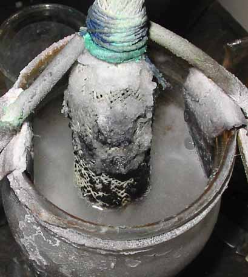

Lead Dioxide substrate Lead Dioxide Anode

This Anode was proposed by G.P. (name depending on pond side :-)) Success varied, with anodes lasting from hours to months. Pieces of Lead Dioxide were put into a porous plastic bag/wrap. A Graphite rod was placed on top of the contents of the bag/wrap and the contents + part of the Graphite rod was plated. The bag/wrap used in the picture was mesh material used in the garden to keep down weeds.
There was a discussion of the Pinkston anode at this URL:
http://www.pyrosociety.org.uk/forum/index.php?showtopic=426&st=105
HIT THE BACK BUTTON ON YOUR BROWSER
BACK TO TOP